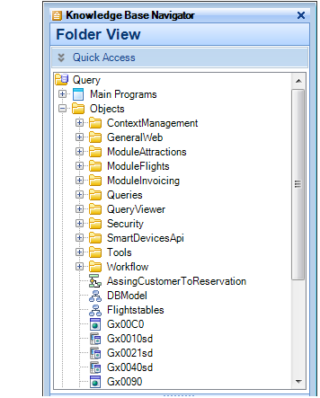

An Environment can have several objects easily managed with Folders. Folders are similar to Windows folders in that they are able to represent a Folder structure hierarchy. That is, a Folder can contain GeneXus objects as well as other Folders. The root (or main) Folder, which is at the top of the hierarchy, will have the same name that was assigned to the Knowledge Base. This root Folder is represented by a symbol and it will contain all the objects and Folders that belong to it. The main Folder displays a list of objects with their respective icons -icons indicate types of objects. The objects are ordered within the folder by name. The root folder is automatically created when the Knowledge Base is created, and has the singularity that it can never be deleted and that its window can never be closed. Likewise, the Objects folder is also created at that moment with other folders below it. An example of how to use this facility is to divide the application into parts and place each part in a Folder which best describes its contents, so as to create manageable groups (system, subsystem, etc.). Each Folder has its own icon and each one of the icons can be selected (either with the arrow keys or by clicking the mouse while positioned over it). An object is opened (by pressing ENTER or double-clicking on it) when its window is opened. When a Folder is selected, a window will be displayed with all the objects that belong to the Folder. You can drag and drop an object into another Folder. When the drag & drop operation ends the object will belong to a different Folder. An object can belong to only one folder. When a Folder is specified, all objects belonging to the Folder and all objects belonging to subordinate Folders will be specified. NoteAny folder can be deleted except for the root folder, the Tables folder, the Customization folder, and the Objects folder. See alsoGeneXus Objects (X Evolution 3)
|